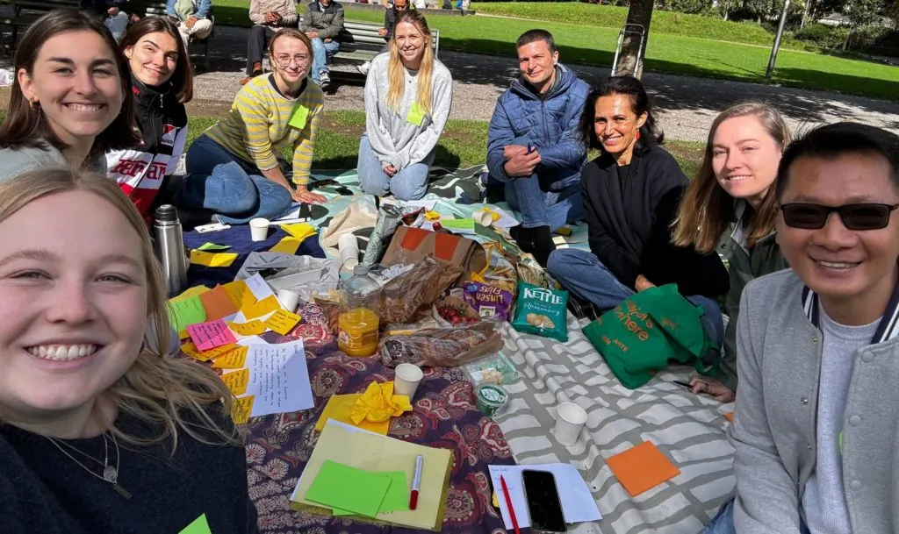

SEET-Umstrukturierung: Die Weichen zu weiterem Erfolg sind gestellt
SEET re-structure sets path for continued success
SEET-Umstrukturierung: Die Weichen zu weiterem Erfolg sind gestellt
Die Nächte werden früher dunkel, die Temperaturen sinken und die Lichterketten deuten das Nahen der Weihnachtszeit an. Diese Zeit ist auch für SEET eine Zeit der Besinnung.

SEET – Support Education, Empower Together – wurde 2019 als Verein gegründet, der zunächst nur aus Freiwilligen – einer Kombination aus multinationalen Fachkräften und Studierenden – bestand und ein Studienunterstützungsprogramm für Flüchtlinge anbot, die ihr Studium in der Schweiz wieder aufnehmen wollen.
Als die Ambitionen und das Arbeitspensum des Vereins wuchsen, wurde 2023 die erste Teilzeitkraft (ein Tag pro Woche) eingestellt, um unsere Programmteilnehmenden zu unterstützen und administrative Projekte und Partnerschaften zu koordinieren. Im Jahr 2024 wurden zwei weitere Teilzeitstellen in den ebenso wichtigen Bereichen Finanzen und Fundraising geschaffen.
Mit der Entwicklung der Arbeit von SEET hat sich auch der Umfang der Unterstützung verändert. Im Jahr 2024 stieg die Zahl der von SEET unterstützten Geflüchtete um 78 %. Während die meisten von ihnen in der Deutschschweiz leben, haben wir in diesem Jahr auch Menschen in anderen Städten erreicht. Die Geflüchteten kommen aus so unterschiedlichen Ländern wie Afghanistan, Syrien, Nigeria, der Türkei, der Ukraine, Georgien, dem Sudan, dem Iran und der Volksrepublik China.
Da die Arbeitsbelastung und die Zuständigkeiten der drei bestehenden SEET-Unterteams, die für die Programmorganisation, die Kommunikation und die Finanzen zuständig sind, immer weiter zunahmen, leitete der Vorstand im Sommer 2024 einen Umstrukturierungsprozess ein, um seine Dienstleistungen kontinuierlich zu verbessern.
Die neue Struktur, die im November 2024 in Kraft trat, umfasst nun sieben Teams: Das Programmteam, das Kommunikationsteam, das Fundraising and Partnerships-Team, das Finance and Accounting-Team, Human Capital & Legal Compliance-Team, IT & Knowledge Management-Team sowie das Strategy und Change Management-Team.
Während 2024 einige ehrenamtliche Mitglieder, die während der Gründungsphase wertvolle Unterstützung geleistet haben, ausgetreten sind, kamen auch einige neue Gesichter hinzu. Die Reihen von SEET wurden durch neue Freiwillige aus Honduras, Singapur und Südafrika verstärkt, die nun alle in der Schweiz leben. Die Diversifizierung unserer Mitglieder hat die Organisation durch die Aufnahme von Personen mit neuen Fähigkeiten, immer breiteren Berufserfahrungen und unterschiedlichen kulturellen Hintergründen weiter bereichert.
Der Verein ist nun in der Lage, seine wachsenden Verpflichtungen besser zu erfüllen, den Wissenstransfer zu optimieren und seine Tätigkeit zu professionalisieren, nicht zuletzt durch die Unterstützung ihrer Mentees und Mentoren.
Co-Präsidentin Nora Diethelm ist seit Februar 2021 für SEET tätig und reflektiert den bisherigen Weg sowie ihre Hoffnungen für die Zukunft: „Die Mission von SEET geht über die Sicherstellung des gleichberechtigten Zugangs zur Hochschulbildung und die Erfüllung des Rechts auf Bildung für alle Menschen in der Schweiz hinaus“, erklärte sie. „Wir streben auch danach, unsere Gesellschaft zum Besseren zu verändern, indem wir die echte Integration von Flüchtlingen fördern. Das bedeutet, dass wir offen für ihre Anwesenheit sind, ihre wunderbaren Talente und Stärken anerkennen und Möglichkeiten schaffen, damit sie ihr Potenzial voll ausschöpfen können. Bei echter Integration geht es nicht darum, Geflüchtete auf schlecht bezahlte Arbeitsplätze zu verweisen, sondern dafür zu sorgen, dass sie in allen Bereichen und Sektoren vertreten sind und Wertschätzung erfahren. Wenn dies geschieht, können Geflüchtete unsere Institutionen bereichern, Innovationen vorantreiben und uns helfen, eine integrativere, vielfältigere und letztlich stärkere Gesellschaft aufzubauen.“
SEET träumt davon, dass eines Tages die Chancengleichheit vollständig verwirklicht sein wird und unsere Arbeit nicht mehr notwendig sein wird. Bis dahin setzen wir uns weiterhin für die Stärkung von Geflüchteten ein und inspirieren andere, sich uns bei dieser Aufgabe anzuschliessen.
As the nights draw darker earlier, temperatures plummet and streetlights reflect the nearing of the festive season, it’s also a time for reflection among the SEET team.
SEET – Support Education, Empower Together – was founded in 2019 as an association initially comprised solely of volunteers – a combination of multi-national professionals and students – that offers a study support programme for refugees seeking to re(start) their studies in Switzerland.
In 2023, as the association’s ambitions and workload grew, the first part-time employee (one day per week) was hired to support our programme participants and to coordinate administrative projects and partnerships. In 2024, two more part-time positions were created in the equally vital areas of finance and fundraising.
As SEET’s work evolved, so too did the breadth of its support. 2024 saw a 78% increase in the number of refugees supported by SEET. Whilst the majority live in the German-speaking part of Switzerland, our reach has also extended to those living in other cities this year. The refugees hail from countries as diverse as Afghanistan, Syria, Nigeria, Turkey, Ukraine, Georgia, Sudan, IR Iran and China PR.
As the workload and responsibilities of the three existing SEET sub-teams representing the Programme organisation, Communications and Finance continued to expand, the Board embarked on a restructuring process in summer 2024 to continuously improve its service provision.
The new structure, which became active as of November 2024, now encompasses seven teams: the Programme Management, Communications, Fundraising and Partnerships, Finance and Accounting, Human Capital & Legal Compliance, IT & Knowledge Management, Strategy and Change Management.
While 2024 saw the departure of some volunteer members who had provided invaluable support during the association’s evolution, some fresh faces joined too. SEET’s ranks have been bolstered by new volunteers from as far afield as Honduras, Singapore and South Africa, who are all now living in Switzerland. Diversifying our membership has further enriched the organisation through the onboarding of people with new skill sets, increasingly broad professional experiences, and different cultural backgrounds.
The association is now calibrated to better fulfil its growing commitments, optimise knowledge transfer and bring an increased ‘professionalisation’ towards its operations, not least in the support of its mentees and mentors.
Co-President Nora Diethelm joined SEET in February 2021 and reflected on its journey to date, as well as her hopes for the future: “SEET’s mission goes beyond ensuring equal access to higher education and fulfilling the right to education for everyone in Switzerland” she explained. “We also strive to change our society for the better by fostering the true integration of refugees. This means being open to their presence, recognizing their wonderful talents and strengths, and creating opportunities for them to reach their full potential.
True integration is not about relegating refugees to low-paid job sectors but ensuring they are represented and valued across all fields and sectors. When this happens, refugees can enrich our institutions, drive innovation, and help us build a more inclusive, diverse, and ultimately stronger society.”
SEET’s dream is that one day, equal opportunities will be fully realized, and our work will no longer be necessary. Until then, we remain committed to empowering refugees and inspiring others to join us in this mission.
Die Nächte werden früher dunkel, die Temperaturen sinken und die Lichterketten deuten das Nahen der Weihnachtszeit an. Diese Zeit ist auch für SEET eine Zeit der Besinnung.
SEET – Support Education, Empower Together – wurde 2019 als Verein gegründet, der zunächst nur aus Freiwilligen – einer Kombination aus multinationalen Fachkräften und Studierenden – bestand und ein Studienunterstützungsprogramm für Flüchtlinge anbot, die ihr Studium in der Schweiz wieder aufnehmen wollen.
Als die Ambitionen und das Arbeitspensum des Vereins wuchsen, wurde 2023 die erste Teilzeitkraft (ein Tag pro Woche) eingestellt, um unsere Programmteilnehmenden zu unterstützen und administrative Projekte und Partnerschaften zu koordinieren. Im Jahr 2024 wurden zwei weitere Teilzeitstellen in den ebenso wichtigen Bereichen Finanzen und Fundraising geschaffen.
Mit der Entwicklung der Arbeit von SEET hat sich auch der Umfang der Unterstützung verändert. Im Jahr 2024 stieg die Zahl der von SEET unterstützten Geflüchtete um 78 %. Während die meisten von ihnen in der Deutschschweiz leben, haben wir in diesem Jahr auch Menschen in anderen Städten erreicht. Die Geflüchteten kommen aus so unterschiedlichen Ländern wie Afghanistan, Syrien, Nigeria, der Türkei, der Ukraine, Georgien, dem Sudan, dem Iran und der Volksrepublik China.
Da die Arbeitsbelastung und die Zuständigkeiten der drei bestehenden SEET-Unterteams, die für die Programmorganisation, die Kommunikation und die Finanzen zuständig sind, immer weiter zunahmen, leitete der Vorstand im Sommer 2024 einen Umstrukturierungsprozess ein, um seine Dienstleistungen kontinuierlich zu verbessern.
Die neue Struktur, die im November 2024 in Kraft trat, umfasst nun sieben Teams: Das Programmteam, das Kommunikationsteam, das Fundraising and Partnerships-Team, das Finance and Accounting-Team, Human Capital & Legal Compliance-Team, IT & Knowledge Management-Team sowie das Strategy und Change Management-Team.
Während 2024 einige ehrenamtliche Mitglieder, die während der Gründungsphase wertvolle Unterstützung geleistet haben, ausgetreten sind, kamen auch einige neue Gesichter hinzu. Die Reihen von SEET wurden durch neue Freiwillige aus Honduras, Singapur und Südafrika verstärkt, die nun alle in der Schweiz leben. Die Diversifizierung unserer Mitglieder hat die Organisation durch die Aufnahme von Personen mit neuen Fähigkeiten, immer breiteren Berufserfahrungen und unterschiedlichen kulturellen Hintergründen weiter bereichert.
Der Verein ist nun in der Lage, seine wachsenden Verpflichtungen besser zu erfüllen, den Wissenstransfer zu optimieren und seine Tätigkeit zu professionalisieren, nicht zuletzt durch die Unterstützung ihrer Mentees und Mentoren.
Co-Präsidentin Nora Diethelm ist seit Februar 2021 für SEET tätig und reflektiert den bisherigen Weg sowie ihre Hoffnungen für die Zukunft: „Die Mission von SEET geht über die Sicherstellung des gleichberechtigten Zugangs zur Hochschulbildung und die Erfüllung des Rechts auf Bildung für alle Menschen in der Schweiz hinaus“, erklärte sie. „Wir streben auch danach, unsere Gesellschaft zum Besseren zu verändern, indem wir die echte Integration von Flüchtlingen fördern. Das bedeutet, dass wir offen für ihre Anwesenheit sind, ihre wunderbaren Talente und Stärken anerkennen und Möglichkeiten schaffen, damit sie ihr Potenzial voll ausschöpfen können. Bei echter Integration geht es nicht darum, Geflüchtete auf schlecht bezahlte Arbeitsplätze zu verweisen, sondern dafür zu sorgen, dass sie in allen Bereichen und Sektoren vertreten sind und Wertschätzung erfahren. Wenn dies geschieht, können Geflüchtete unsere Institutionen bereichern, Innovationen vorantreiben und uns helfen, eine integrativere, vielfältigere und letztlich stärkere Gesellschaft aufzubauen.“
SEET träumt davon, dass eines Tages die Chancengleichheit vollständig verwirklicht sein wird und unsere Arbeit nicht mehr notwendig sein wird. Bis dahin setzen wir uns weiterhin für die Stärkung von Geflüchteten ein und inspirieren andere, sich uns bei dieser Aufgabe anzuschliessen.